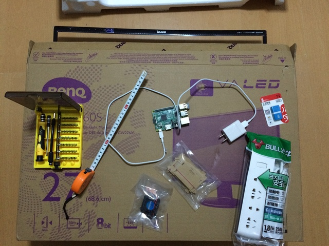
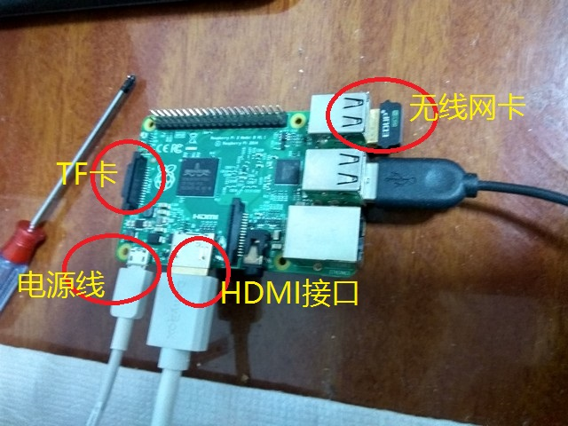
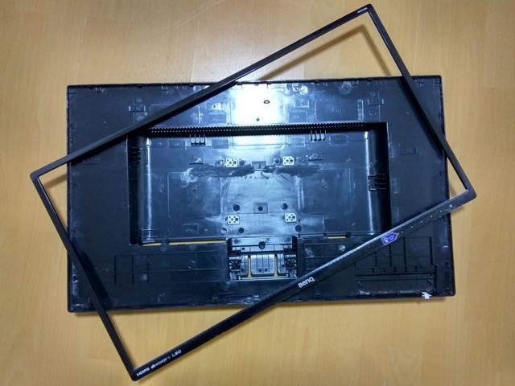
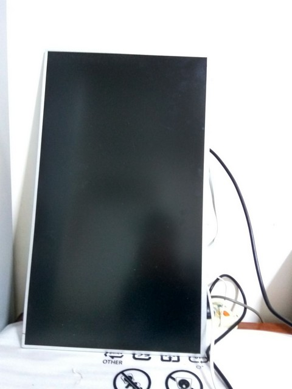
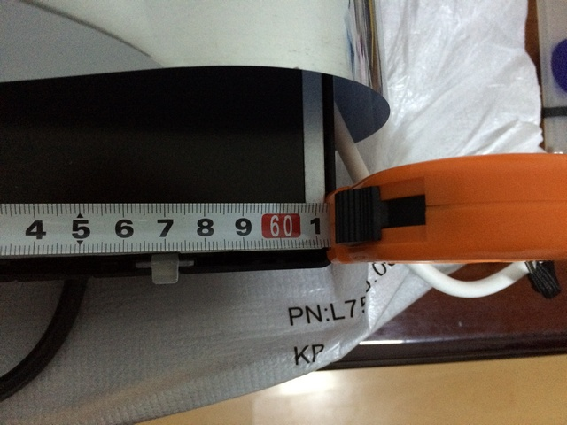
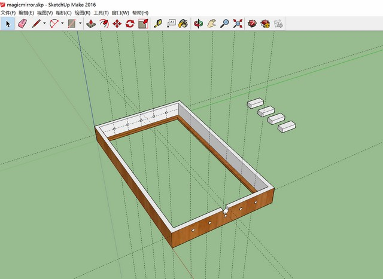
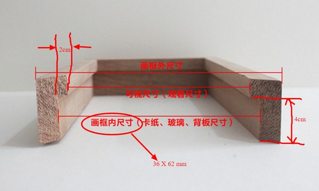
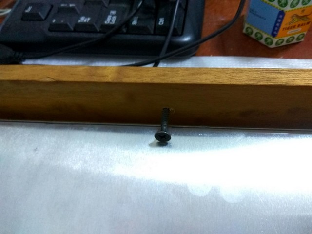
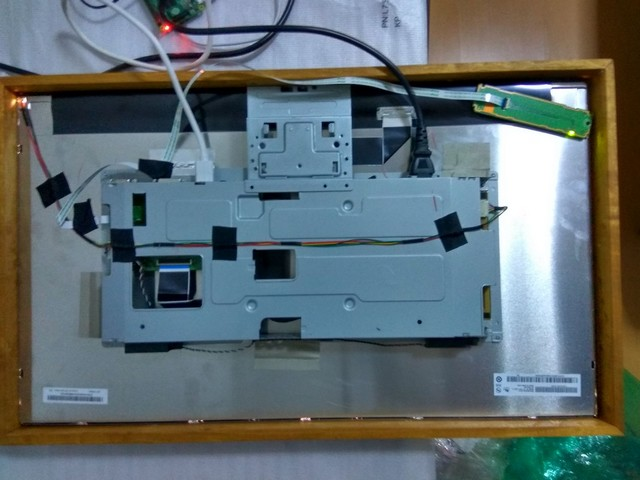

本文介绍魔镜制作的硬件部分。
基本材料
制作魔镜所需要的硬件基本与原版相同（在现有的架构下也确实没有太多变化的空间），只是由于部分材料、场地的限制，在实际制作过程中有所简化。我使用的主要硬件及工具有：
- 显示器
- 树莓派（及 USB 电源等配件）
- 卷尺
- 插排
- USB 无线网卡及 TF 卡
- 螺丝刀套装
放一张全家福——

当然，除了上面的工具之外，最好还要有 USB 键盘、鼠标等外设（便于调试软件）。
树莓派
制作魔镜的第一步当然是购买一个合适的树莓派，这个不用我多说，网上到处都是卖的，买个最新的性能比较好的即可。这里要说的是树莓派需要的配件。我买了很多周边配件，像散热片、风扇、框架什么的，最后发现都用不上，真正能用上的只有 TF 卡和 USB 无线网卡。购买配件的时候需要注意硬件兼容性，一定要选择能够兼容该款树莓派的配件，特别是无线网卡。作为参考，我是在 X东上购买的 EDUP EP-N8508GS 迷你 USB 无线网卡，这款网卡能够免驱启动，效果还不错。

当然，由于显示器上面带有静电，最后安装的时候要避免树莓派和显示器的直接接触（否则会造成树莓派反复重启，不要问我是怎么知道的），最好要用绝缘的材料简单包装一下。
拆解
这里需要拆解的对象是显示器，主要目的是减小魔镜的体积，便于安装镜框。现代的 LCD 基本上还是比较容易拆解的，先卸下前盖，然后再拆掉后盖，拆解的时候注意不要伤害到内部线路和显示屏：

拆解完成之后干干净净的显示器：

然后就可以开始测量显示器的尺寸了：

镜框
制作镜框是个木工活。一开始我准备自己动手，甚至还设计了下草图：

后来发现各种材料、技术、场地都不具备，而且工具价格也都不便宜。于是干脆就把镜框“外包”给了 X宝，找了家做画框的店家，说好尺寸要求，让他们帮忙弄一下（图片供参考，原谅手残星人）：

不过这里有个风险，因为魔镜成品对尺寸要求比较高，不论外框过大或者过小都会影响里面显示器的显示效果，所以在找店家的时候一定要问好对方的制作精度，看看自己能不能够接受这样的误差。因为这种定制产品卖家一般也不接受退换货，在给对方报尺寸的时候长、宽可以适当报大5mm 左右，这样万一尺寸大了点还可以在显示器两边塞点东西对付过去，不然要是小了显示器塞不进去那真是欲哭无泪。另外要注意的是，为了防止镜框太大让显示器无法固定，同时也兼顾容错性，内槽（就是镜框卡住显示器的部分）的宽度最好在 1cm 以上（在X宝上找到能满足所有这些条件的卖家也是个辛苦活……）。
其他
其余的材料主要就是最终呈现效果的半透半反镜子（也叫单向玻璃、透视玻璃，名词挺多的）了，同样可以在 X宝上搞定。这里要考虑下透光率，按照国外网友的经验，透光率在 50%~70% 的时候呈现的效果最好。我没有在 X宝上找到这样的镜子，最终选定的卖家是 10% 的透光率，效果也勉强能够接受。当然，镜子的尺寸要求也和上面的镜框一样需要注意。
组装
所有材料到位之后就是最后的组装过程了。硬件的组装过程非常简单，把镜子、显示器依次放入镜框，然后用螺丝钉（或者其他什么东西）固定，就大功告成了！


Comments
comments powered by Disqus